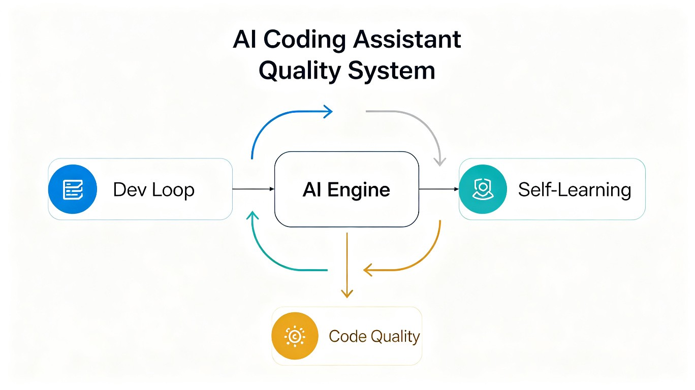
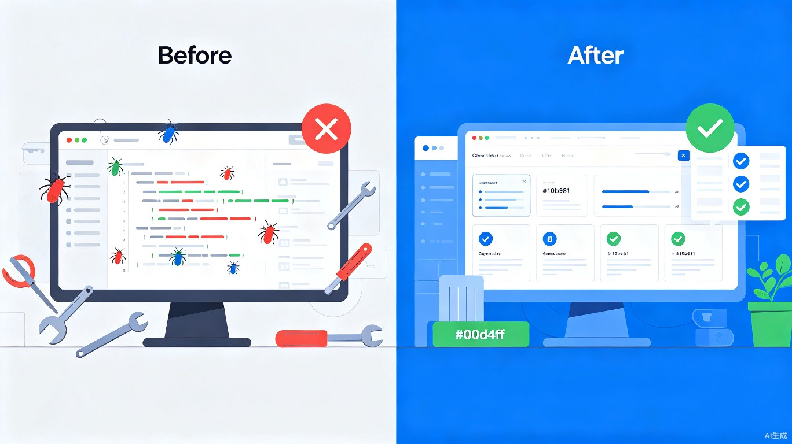

1发现的痛点
在使用 AI 编程助手进行日常开发时，我们观察到一系列普遍存在的质量隐患：
测试覆盖不足
AI 生成的代码往往"看起来能用"，但缺乏系统化的测试验证，边界条件和异常路径容易被忽略。
缺乏流程约束
没有强制性的开发流程规范，AI 可能跳过关键步骤直接输出代码，导致需求理解偏差或实现不完整。
无法持续进化
每次会话的经验教训不会沉淀，相同的错误在不同会话中反复出现，AI 无法从历史交付中学习改进。
交付质量不可控
缺少明确的验收门禁和审查记录，"完成"的标准模糊不清，交付质量完全依赖 AI 的即时判断。
💡 核心洞察
问题的本质不是 AI 不够聪明，而是缺少一个系统化的"质量保障框架"来约束和引导 AI 的开发过程。我们需要的是一个既能在单次交付中保证质量，又能跨会话持续优化的双循环系统。
2解决方案概述
QualityLoop 是一套专为 AI 编程助手设计的智能开发质量保障系统，由两大核心引擎组成：
Dev Loop 引擎
全局开发交付循环。强制执行 8 个阶段的交付流程：需求分析、任务拆解、边界设定、审查测试、逐项实现、审查覆盖、修错循环、清理交付。确保每次代码交付都经过严格验证。
Self-Learning 引擎
智能自我进化系统。实时监控对话过程，提取用户偏好和代码模式，识别可自动化的重复任务，自动创建和优化技能，使系统随使用时间推移越来越精准。
3系统架构
QualityLoop 采用双循环架构，内循环保障单次交付质量，外循环驱动跨会话持续进化。

graph TB
subgraph "内循环：Dev Loop（单次交付质量保障）"
A["Phase 1
分析需求"] --> B["Phase 2
拆解任务"]
B --> C["Phase 3
设定边界"]
C --> D{"4.5 门禁
清单完整?"}
D -->|Yes| E["Phase 5
逐项实现"]
E --> F{"6.1 全部
R-xx PASS?"}
F -->|Yes| G{"6.2 覆盖度
审查通过?"}
G -->|Yes| H["Phase 8
清理+交付"]
G -->|No| I["补充 R-xx"]
F -->|No| J["Phase 7
修复+扩展"]
D -->|No| K["补充清单"]
K --> D
J --> F
I --> F
end
subgraph "外循环：Self-Learning（跨会话进化）"
H --> L["摩擦信号采集"]
L --> M["模式分析"]
M --> N{"置信度 > 0.8?"}
N -->|Yes| O["自动创建/优化技能"]
N -->|No| P["积累待观察"]
O --> Q["下轮 Dev Loop
清单更全更准"]
P --> M
end
Q -.->|"下一轮"| A
技能生态协同
| 阶段 | 协作技能 | 职责 |
|---|---|---|
| 需求分析 | brainstorming（可选） | 新功能创意发散 |
| SQL 查询 | mysql-connect | 只读查询 MySQL 数据 |
| 接口测试 | postman-feign-import | Feign 接口自动导入 Postman |
| 代码审查 | TRAE-code-review | 合并请求 / 差异审查 |
| 安全扫描 | TRAE-security-review | 安全漏洞检测 |
| Bug 调试 | TRAE-debugger | 运行时问题定位 |
| 文档生成 | java-doc-cn-api | Java Javadoc 注释 |
| 技能进化 | self-learning | 对话末扫描摩擦信号 |
4Dev Loop：开发交付循环
Dev Loop 是系统的质量核心，通过 8 个严格阶段确保每行代码都经过验证。其核心理念是：只有全部 R-xx 为 PASS、覆盖度审查通过、测试残留清理完成时，才算完成。
八阶段流程
Phase 1：分析需求
读整段对话，识别显式要求和隐含约束。遇到模糊需求必须询问用户，禁止猜测。产出：一句话目标 + 验收标准。
Phase 2：拆解任务
将需求拆解为 3-10 个可独立验证的子项，边界清晰。识别依赖关系，标注需要调用的领域专属技能。
Phase 3：设定边界
明确 In scope / Out of scope，枚举边界条件（空值、零值、极值、特殊字符、并发、超时等）和异常场景。
Phase 4：建立审查测试（先于实现）
这是整个循环的基石。先穷尽场景清单，再写原子化 R-xx 审查表（一测一边界），通过 4.5 门禁后才准许写实现代码。
Phase 5：逐项实现
一次只实现一个最小单元。遵循最小改动原则，不碰无关代码。不会的 API 必须查文档或问用户。
Phase 6：审查记录 + 覆盖度审查
逐条执行 R-xx 并记录 PASS/FAIL。全部通过后还需做覆盖度审查，确认无遗漏边界。
Phase 7：修错循环
存在 FAIL 则定位根因、修复、扩展边界、重跑测试。循环至全部 PASS + 覆盖度通过。
Phase 8：清理 + 交付
彻底删除测试残留文件和依赖，汇报变更明细和审查摘要。记录摩擦信号供 Self-Learning 优化。
测试门禁体系
4.5 实现前门禁（全部满足才准写代码）
穷尽场景已勾选 AND R-xx 草案完整 AND 4.2 三问全过 AND（若有 T-xx）每条 T-xx 已因正确原因失败 → 准予实现
| 关卡 | 名称 | 要求 |
|---|---|---|
| 4.1 | 穷尽场景清单 | 对照正常路径/边界/错误/非法输入逐项勾选 |
| 4.2 | 清单审查 | 自问三题：还有遗漏？够细？能抓到 bug？ |
| 4.3 | 原子 R-xx 表 | 一测一边界，单文件 >= 8 条，单接口 >= 15 条 |
| 4.4 | 先红验证 | 临时测试必须因功能缺失失败（非配置错误） |
| 4.5 | 实现前门禁 | 以上全部通过才准进入 Phase 5 |
拒绝常见借口
以下理由均无效："改动太小" / "本地跑过" / "用户催了" / "测了好几轮够了" / "时间不够"。违反规则的文字就是违反规则的精神。
5Self-Learning：自我学习引擎
Self-Learning 是系统的进化核心，使 AI 助手能够从每次交付中学习，不断优化自身的规则库和技能生态。
六大核心能力
👀 实时对话监控
实时监控所有对话，提取用户偏好、代码模式、项目规则，追踪用户行为和决策模式。
📚 知识管理
学习用户编码风格和代码模式，存储完整对话历史，建立高效索引系统。
🌐 智能索引
按主题、频率、复杂度、用户满意度分类索引，支持 FTS5 全文搜索。
⚙ 自我优化
内容优化、索引优化、模式识别、性能追踪，自动调整置信度阈值。
🔧 技能创建
基于学习模式自动创建新技能，识别可自动化的重复任务并生成技能文件。
📊 模式应用
自动应用已学模式、按需查询知识库、实时监控异常、主动给出优化建议。
双模式审查机制
🟠 轻量审查（每轮必执行）
触发 → 快速扫描 → 识别 1-2 个高影响低风险改进 → 直接修改技能文件 → 记录日志
- 耗时短，不阻塞正常流程
- 有改动则报告，无改动则静默
- 关注最显著的改进机会
🟡 深度优化（按需触发）
全面分析 → 利益相关者确认 → 实施 → 验证 → 文档
- 用户明确要求或大型任务后触发
- 全面扫描知识库和技能库
- 系统性的重组和优化
双循环协同
Dev Loop + Self-Learning = 持续进化
Dev Loop 保证单次交付质量，Self-Learning 把 R-xx FAIL、跳步、用户纠错沉淀进规则，使下轮 Dev Loop 的清单更全、触发更准。单独使用任何一个都无法保证最终质量 —— 循环机制才是核心。
6与传统方案对比
QualityLoop 与现有的代码质量保障方式相比，在多个维度上具有显著优势：

❌ 传统 AI 辅助开发
AI 直接生成代码，没有系统化的质量验证流程。测试覆盖率取决于 AI 的即时判断，边界条件容易被忽略，同样的错误反复出现。
✅ QualityLoop
强制执行完整的交付循环，每个边界都有对应审查项。从历史交付中持续学习，错误不会重复，交付标准有据可查。
7价值与意义
效率提升
通过系统化的流程编排，消除"返工-修复-再返工"的无效循环。一次做对的理念大幅减少了代码调试和修复的时间成本，使 AI 辅助开发的效率真正可预期。
商业价值
在企业级 AI 辅助开发场景中，代码质量直接关系到产品稳定性、维护成本和用户信任。QualityLoop 提供了一个可量化、可审计、可信赖的质量保障框架，让 AI 生成代码的交付质量达到人工 Code Review 级别，同时保持 AI 的高效产出。
社会价值
AI 辅助编程正在降低软件开发门槛，让更多人能参与创造。但质量保障是 AI 编程民主化的最后一公里。QualityLoop 通过让 AI 学会"自我约束"和"持续进化"，为更广泛的 AI 编程应用奠定了质量基础，有助于提升整个行业的 AI 代码交付标准。
一句话总结：QualityLoop 不是替代人类审查，而是让 AI 在生成代码时就遵循最高质量标准，把"发现 bug"变成"预防 bug"。
8产品路线图
QualityLoop 将分三个阶段逐步完善：
Phase A：核心闭环（当前）
已实现 Dev Loop 八阶段流程 + Self-Learning 基础框架 + 技能生态协同。在 TRAE 平台可用，支持日常开发交付场景。
Phase B：智能增强
引入 SQLite 知识库 + FTS5 全文检索 + 自动技能创建 + 多项目知识共享。让系统真正拥有"记忆"。
Phase C：生态扩展
开放技能市场 + 团队协作质量看板 + 跨语言/框架扩展 + 集成 CI/CD 流水线。构建 AI 质量保障生态。
9总结
QualityLoop 的核心创新在于将软件工程的严谨方法论（TDD、Code Review、持续集成）与AI 的自学习能力相结合，构建了一个前所未有的 AI 编程质量保障系统。
三个关键差异化
- 双循环架构：内循环保交付质量，外循环促持续进化 —— 不是单点工具而是系统工程
- 原子化验证：一测一边界，穷尽场景，零容忍遗漏 —— 质量标准可量化可审计
- AI 驱动 AI：用 AI 的自学习能力来提升 AI 的代码质量 —— 元智能的创新应用
我们相信，当 AI 编程助手具备了系统化的质量保障能力，AI 辅助开发将从"能用"走向"可靠"，真正成为每个开发者的生产力倍增器。